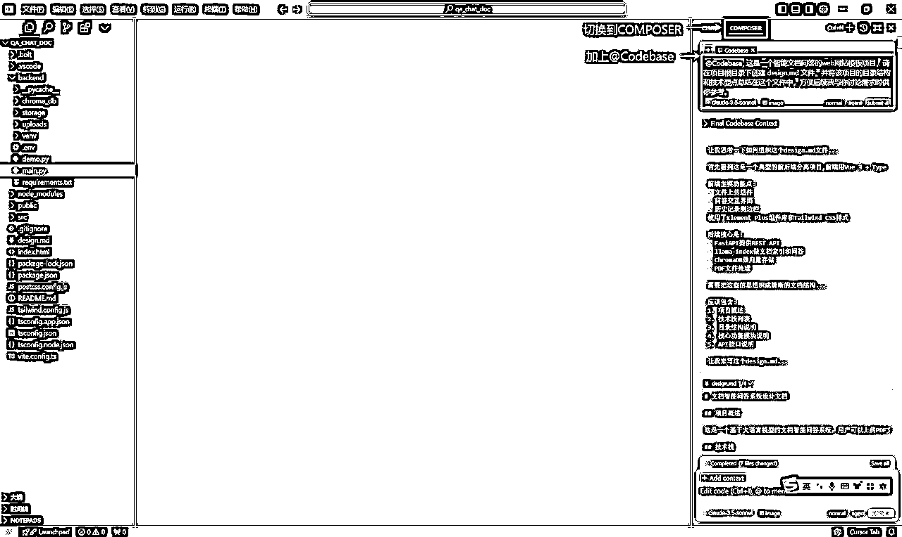
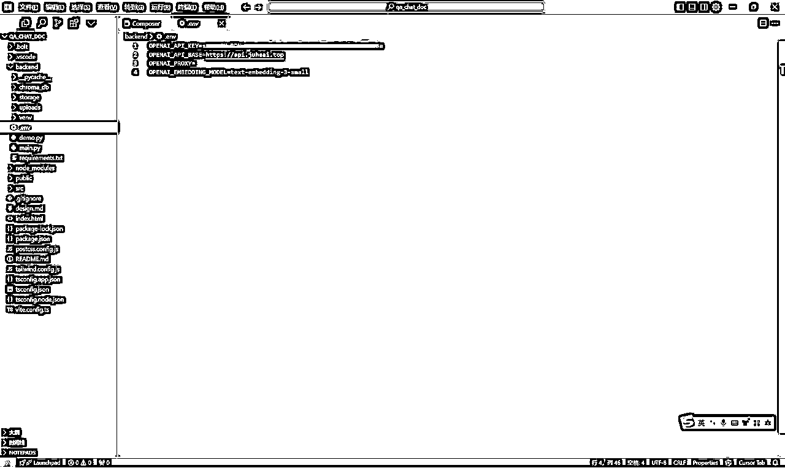
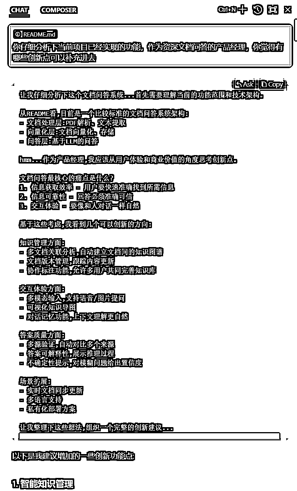

来源：https://aqej8p49ny.feishu.cn/docx/ES9LdKOWkos13OxYOEucD1xlnxe
友情提示：电脑观看体验较好
随着ChatGPT的爆火，作为35+的大龄程序员，也是密切关注着大模型的相关技术和商业模式，很早的时候也参与了刀姐的ChatGPT课程，受益良多。在企业开发过程中，也见过和用过很多低代码的平台，大都言过其实，对于稍微复杂的软件功能，低代码平台就捉襟见肘，随着AI能力的提升，日常编程过程中会使用到ChatGPT、智谱清言等AI工具辅助进行sql编写、代码优化、会议总结等，第一次接触完全用AI来完成开发还是阿里的通义灵码广告，也是这次体验让我初尝到了AI编程的强大，后面就开始重点关注AI编程的赛道，刚好这不久看到生财的航海有AI编程，没有任何犹豫就报了，然后就有了这篇文章。
虽然距离ChatGPT发布已经有很长时间了，但是大模型落地的应用却不多，目前市面上比较成熟的商业案例主要还是智能客服、智能问数这些，核心思想还是RAG，我个人比较喜欢看技术相关书籍，有时候看到接近千页的书，而且还需要短时间内掌握并运用，除了充分利用碎片时间，之前也没有太好的办法，我想能不能自己做一个利用大模型来辅助高效阅读的工具，这时候就想到了曾经体验过的chatPDF产品，能快速生成大纲、摘要、问答，我觉得自己可以按照这个思路进行深化，所以就打算用Cursor来帮我实现这个梦想——提升阅读效率。
为什么要做竞品分析：类似产品有没有市场？类似产品如何变现？类似产品有哪些优点和不足，自己能否超越？
基于排名和相关性，筛选出本次要重点对齐的目标产品：chatpdf.com
主要功能：文档上传&解析、智能问答、文档总结、多语言支持、多文件支持、圈选解释
亮点特色：多文件支持、圈选解释、多语言支持
收费模式：免费用户每天只有2个文档上传额度，需要升级会员，具体内容见下图
基于上述统计数据，做出一些判断：
总月访问量：5,653,000
月独立访客数：1,748,000
跳出率：48.95%
初步分析，当前网站用户访问量较好，由于该产品每天有两份的免费额度，没有升级会员的情况数据暂无法深入计算收益，但根据流量情况，可以确定的是该产品用户需求量较大、而且基于产品性质，平均月访问次数在5次左右个人觉得还算活跃，功能应该比较符合用户需求，而且收费模式清晰可以直接参考借鉴。
结合智能问答产品的整体实现逻辑，需要投入的主要有几类费用：
| 成本类目 | 方案一 | 方案二 | 方案三 |
|---|---|---|---|
| 嵌入模型 | 本地部署 | SiliconFlow免费嵌入模型 | 调用openai的嵌入模型 |
| 对话模型 | 本地部署 | SiliconFlow免费对话模型 | Deepseek V3/openai的GPT4系列模型 |
| 云服务器 | 阿里云/腾讯云/其它云 | 38元/每月的轻量级服务器 | 199的服务器，地域选择香港 |
目前主要有三种方案，作为前期流量不大，但是问答的质量要高，所以我目前的搭配是：嵌入模型使用SiliconFlow免费的嵌入模型，对话模型使用Deepseek V3模型，目前价格比较实惠，性价比较高，云服务使用阿里云的轻量级服务器2核2G，38元/年，如果后续业务量大，再升级服务器配置即可。所以结合这些背景，我考虑将产品定价基于token来计算，在Deepseek V3的Token价格基础上，适当增加一定的费用作为软件开发、维护和服务器成本，由于目前版本还没有增加收费模块，所以本次还没有敲定最终的定价方案，后续会重点考虑收费模式。
产品功能演示（手机端观看建议双击播放画面全屏）：
产品亮点功能：1、文档一键脑图生成 2、文章深度总结 3、文章问题深度挖掘 4、Deepseek V3大模型底座
第一步：打开官网
首先，打开 Cursor 的官网：https://www.cursor.com/。
第二步：下载安装
在官网页面，可以看到 “DOWNLOAD” 或者 “DOWNLOAD FOR WINDOWS” 按钮，点击它进行下载。下载完成后，双击安装文件开始安装。
第三步：初始设置
安装完成后，会自动打开设置界面。在这里，你可以按照自己的喜好进行选项设置。
Keyboard：根据自己经常使用的编辑器去选择，如果习惯使用idea，直接就选择Jetbrains，使用Cursor快捷键就跟idea一样。
Language for AI：人工智能语言，我们输入中文。
Codebase-wide：为代码库范围的问题进行计算嵌入，这个我们默认即可。
以上设置完然后点击 “Continue” 蓝色按钮。
第四步：安装扩展
接着会弹出新的界面，点击蓝色的 “Use Extensions” 按钮，会自动安装 VS Code 扩展。这个过程预计持续 3 - 5 分钟，安装完后会出现隐私选项。
第五步：隐私选择
考虑到数据安全，你可以选择私有模式。在私有模式下，你的提问和代码不会被官方或第三方存储。继续点击蓝色的 “Continue”，就会弹出注册框。
第六步：注册账号
点击 “Sign Up”，会自动打开浏览器窗口。你可以使用 Github 账号进行注册。注册成功后会跳转到新页面。
tips：开始一直用QQ邮箱注册，始终无法成功，后面改成使用GitHub方式授权注册登录成功
第七步：登录并确认
在新页面选择 “YES，LOG IN”，此时客户端会更新显示效果。
第八步：中文插件安装
安装中文插件，让客户端切换为中文简体显示。点击重启按钮，即完成环境安装配置的工作。
在使用Cursor一段时间后，会经常碰到代码多次重写后，想回到之前的某个版本，确苦于没有方法，这里通过Cursor与github来集成，实现高效版本管理。
tips：建议有一点点小的改动，自己觉得也比较满意就立马提交，不要偷懒想一次性做一大波需求再提交，当你的代码被它改的一塌糊涂，想回也回不去的时候，就知道及时提交的重要性。
1、安装Gitlens插件
2、仓库初始化
有问题的代码，可以选择放弃更改
3、提交到github远程仓库
如果需要构建新版本，可以创建新分支，具体步骤如下：
cursor切换到新分支：
至此，cursor代码版本管理基本介绍完成，通过利用github创建不同的分支，来进行版本管理。

【提示词】我想做一个类似上面的智能文档问答的web网站，希望采用llamaindex、PyPDF2、vue、openai、Chroma技术栈来实现，请基于此要求，帮我实现，界面效果参考附件图片
在这里我找了一个自己比较喜欢的文档对话参考站，截图后作为附件上传到了这个对话窗口，作为提示词的额外补充。同时由于我本身对文档智能对话有技术背景，所以我直接指定了适合企业级生产的技术栈来限定框架。
【TIPS】对于没有任何开发技术背景的朋友，不用自己设定技术栈，可以让他帮忙推荐最适合的技术栈，也可以拿到自己满意的结果
【提示词】@Codebase 这是一个智能文档问答的web网站模板项目，请在项目根目录下创建 design.md 文件，并将该项目的目录结构和技术要点总结在这个文件中，方便后续我与你讨论需求时供你参考。

按照他提供的启动步骤，一步步操作，如果有报错，可以将错误信息完整的发到聊天框，按照他给的修复方案执行即可。
【提示词】如何启动该项目
我使用的是openai的模型，由于网络问题，使用了代理站上购买的，链接地址为：https://api.juheai.top，之前也一直在用这个，感觉自己觉得还可以，其它的没怎么尝试过，大家也可以根据自己的渠道来选择。
当前项目模型的秘钥配置是在.env文件中，根据个人的渠道修改即可。

至此，通过bolt和cursor，完成了智能文档问答的初始工程构建和验证，后续都是基于此版本让cursor不断演进。
在开始编程之前，我先给小白大致看下软件的内部结构组成，方便后面与cursor对话的时候更加专业。
基于上述的软件结构，以用户通过浏览器访问智能文档问答网站的登录功能为例，大致介绍下背后的运行流程和各组件的作用：
1、浏览器发起请求
当用户在浏览器里输入智能文档问答网站的登录页面网址时，浏览器就会根据这个网址去尝试获取对应的页面内容，这个请求会先发送出去，朝着网站所在的服务器方向前进。
2、前端 Nginx 代理
3、后端 Uvicorn 容器接收请求
4、具体服务处理登录请求
5、返回响应
概念补充：
什么是前端、后端？各自有哪些技术框架，应用场景是怎么样的？
前端：主要负责构建用户直接与之交互的界面部分。包括网站的页面布局、视觉设计、交互元素（如按钮、菜单、滑动条等）以及在移动应用中用户看到和操作的界面。前端技术主要包括 HTML（超文本标记语言）、CSS（层叠样式表）和 JavaScript 等技术。例如，在一个电商网站中，前端开发人员要设计产品展示页面，确保商品图片清晰美观地展示，价格和购买按钮等交互元素位置合理且易于用户操作。他们就像是建筑师和室内设计师，精心打造出一个美观、易用的空间供用户体验。主要开发框架如下：
后端：主要负责处理业务逻辑、数据存储和服务器管理等幕后工作。后端开发人员通过编写服务器端代码来实现如用户认证、订单处理、数据查询与存储等功能。以电商网站为例，后端要处理用户注册登录时的身份验证，当用户下单后，后端负责处理订单信息，包括计算价格、检查库存、更新数据库等复杂的操作。后端就像是建筑的基础设施建设者，构建起支持整个应用运行的坚固框架，包括水电供应（数据存储和传输）等。常用后端开发语言应用场景如下：
经历了智能文档对话从0到1的产品开发，总结提炼基于Cursor核心开发的环节为：1、描述需求（human） 2、代码编写（cursor） 3、Reject or Accept all（human） 4、重新启动项目（human） 5、功能验证（human） 。针对这些环节，我基于自己的之前软件开发经验和最近的cursor开发过程，汇总关键思路和技巧。
核心思想：产品思维
常用技巧：
参考示例：我希望问答窗口交互风格完全参考chatgpt来实现

核心思想：耐心
常用技巧：
1、一个需求反复多次始终都改不好（程序员可能要花费很长时间才能给你一个凑合的版本）
解决方案：分析下需求是否过大，能不能再拆分的细一点；自己表达的需求是否详细，有条件的可以咨询下产品经理
2、出现异常如何快速解决
解决方案：1、尽量把相关错误信息完整的输入给Cursor，有能力的可以把相关代码也附加进去；2、如果问题不是很明显，可以让Cursor打印详细的日志信息，辅助问题定位，把添加了日志的相关信息输入Cursor可以帮助它更快的定位到问题
3、某个需求开发不知道怎么跟Cursor精准表达
核心思想：用心看
常用技巧：1、cursor输出的改动情况介绍一定要仔细看，如果发现改变了之前做好的功能或者不是自己期望的，就直接Reject，反之可以考虑Accept all，而且现在cursor支持从某次会话进行回退。2、有时候cursor抽风了，applying失败、或者出现其它的异常，所以你要认真查看相关响应情况，谨慎做出决策。
核心思想：甩手掌柜
常用技巧：能让机器干的活觉得不自己干，正常搭建的前后端项目，都支持热更新，只要改动了代码，基本都会生效，或者服务会自动重启，如果你发现没有生效或者重启，可以让cursor修复。这样不用每次都要自己手动重启。
核心思想：仔细
常用技巧：
1、在新增功能时，让cursor不要改动现有的功能，这样可以在一定程度上确保现有功能的正常
2、当完成一个满意的功能开发后，记得把之前的功能都验证一遍，中间有碰到过几次新功能开发好了，但是把我之前的功能改没掉了或者不能使用了，所以当你打算提交某个版本前，确认下所有功能是否符合预期。
核心思想：及时提交
常用技巧：
1、当有某个功能基本满意，就立马提交，不要等到说再调调看能否更好后再提交，也许下一次他改到你怀疑人生，然后怎么也改不回自己之前稍微满意的那个版本。
2、现在cursor支持指定会话进行回退，当你发现想回到某次对话的状态，可以使用这个功能，能很方便的找回之前的代码。
3、代码仓库国内用户建议使用码云或者自建gitlab仓库
在用github管理代码的时候，发现cursor在同步代码到GitHub的过程中，有时候特别慢或者失败，用码云就比较顺畅。
核心思想：怎么方便怎么来
常用技巧：
1、上来就直接让cursor给你制造一键部署启动脚本，推荐使用docker的方式部署，可以少很多兼容性问题
2、云服务器租赁
我个人使用阿里云的比较多，而且阿里云目前有很多新用户的活动，我现在的这个智能文档问答软件就是部署在38元每年的一台轻量级服务器上面。当然如果你希望能被国外用户访问，可以考虑购买企业级的199套餐，支持选择区域为香港，或者使用腾讯云等其它平台，都有境外服务器可用。对于阿里云服务器的使用可以自己查看相关文档即可，这里不做展开说明。

3、Docker部署新手可能会碰到的问题
在让cursor制作镜像时，谨慎选择基础镜像，在我部署的时候，由于cursor开始使用了与我项目不匹配的python基础镜像，导致走了很多弯路，建议一开始就告诉cursor你期望什么版本的基础镜像，这样可以更加高效完成你的部署脚本开发。
对于不懂开发、运维的小白，如果使用cursor构建了部署脚本，运行后，发现镜像没有正常启动，怎么查看启动异常日志，可以使用命令docker logs -fn 200 镜像名称 查看镜像日志信息，然后拷贝到cursor镜像问题修复。
回顾使用Cursor完成智能文档问答产品开发的全过程，我有几个感触想分享给大家。
Cursor核心也是大模型，是自然语言序列到代码语言序列的序列到序列模型，cursor只是做了交互和代码编辑器的相关工作，所以模型的输出如果想要满足预期，就需要给足高质量的输入，而产品经理这个角色就是关键，所以我们可以和产品经理合作进行开发，或者模仿产品经理来提供需求输入。
在传统软件开发下，软件开发技能是产品成功的硬实力，但是在AI编程时代，耐心和毅力就更加重要，在整个开发和部署过程中，我与Cursor可以说是深入交流，虽然自己会开发，懂部署，但是我基本都是无脑操作，看到异常就直接丢给cursor，都没有发挥自己的软件开发技能去分析错误原因，反而当甩手掌柜，就是这样的态度完成了产品上线，在过程中，好几次都有点崩溃，越改越乱，越乱越着急，导致提问质量下降，形成了恶行循环，但是最终我还是坚持过来了，AI编程大家一定要有心理准备，一次就成功那是运气，大多数时候还是要经历多次的迭代反复。
AI编程说到底也依然是编程，只是不用程序员自己编写代码了，但是关键架构设计、数据库表设计、模块划分、整个软件的运行逻辑都很重要，如果你懂这些，可以有掌控AI召唤出的神器，当上线到生产环境，就不会心里没底。同时对于某些功能开发，如果你本来就知道要怎么实现，可以更加详细的告诉Cursor，这样能让自己少走很多弯路。
在自己从0到1全部由Cursor开发完成第一个版本后，我首先想分享给没有企业级软件开发经验朋友的是一个完整的企业级软件开发流程，通过全局了解到企业级软件开发的真实流程，从而让他们知道软件开发的整体面貌，做到心中有数，知道还欠缺哪些地方，哪些地方可以依赖AI进行自动化实现。
在软件代码、部署脚本完全依赖Cursor开发完成后，结合企业级软件开发流程，其实还有很多环节可以通过AI进行提效，简单列举几个供大家参考：
收集需求：通过收集同类产品的官方产品使用手册、产品宣传文案等相关需求材料形成特定产品的知识库，同时接入联网搜索功能，可以开发一个产品需求功能自动生成的智能体，后续只需要输入要开发的产品大致描述，该智能体就可以自动帮你生成一份比肩产品经理的详细的产品功能说明书，基于功能大小可以考虑分版本开发，将该说明书对应规划的版本内容丢给Cursor，即可驱使Cursor进行代码编写，从而降低新手需求描述不清晰、不知道怎么描述功能的痛点。
原型设计：在这里给大家推荐一个超级好用的工具MasterGo AI【AI 生成界面】，我这里是基于最近很火的Deepseek官网的登录页面截图发给了MasterGo，他直接给我生成了三个方案的页面，还支持多种前端框架自由切换，代码自动生成，生成的效果与截图非常接近了，不多说，大家看看我下面的截图感受下。

当借助Cursor完成了软件开发后，最终要上线到生产环境给用户使用，我想分享的第二点就是哪些环节需要重点确认是否符合生产要求，否则等用户量大起来就会出现各种问题。
业务数据持久化，建议持久化到常见数据库：mysql、postgresql等企业级经常使用的数据库，因为Cursor可能完成了功能，但是底层数据是存储到sqllite等小型数据库，一旦上线到生产环境，数据量大起来，或者软件版本升级，很容易导致数据丢失和性能瓶颈，而且如果用户访问量大，也不方便做横向、纵向扩展等企业级标准手段。所以建议一开始就考虑使用标准的企业级数据库进行业务数据的持久化，有能力的可以自己设计数据库表结构，对于后续自己做数据分析有帮助。
考虑数据权限，切忌不要出现不同用户之间可以相互访问彼此的数据，这在生产环境下是大忌，所以我们一定要验证不同用户之间数据是隔离的，这个非常重要，不然出现数据泄露就是很严重的问题了。
适当考虑缓存，对于某些操作耗时比较久的但是数据不是频繁更新的，可以考虑使用Redis，将热点数据缓存到Redis，这样不用每次访问数据库，既能提升性能，同时也能减轻数据库的访问压力。
回复：重新安装Cursor，之前的环境都不会丢失；如果网友还有更好的方案欢迎提供。
回复：重新手动点击apply或者重启Cursor再apply。
中间有段时间是点击某次提问的地方，会有一个checkout的按钮，点击即可恢复到对应的版本，不过现在更新后好像没有这个功能了，这种情况建议大家还是及时提交代码，这样不用担心找不回了。
回复：换个账号从新注册，不会影响之前的开发环境；某宝购买多人共享账户，有钱的可以自己看套餐选择。
回复：可以尝试把功能拆解的更细一点，需求描述更加具体，同时提供参考截图进行辅助，总之一条，给足高质量的输入素材；丢给MasterGo进行实现，将MasterGo生成的代码一起输入给Cursor。
回复：Chat主要是实现部分代码片段，不会自己完成代码文件创建，composer可以直接给你生成代码，讨论需求用Chat，写代码用composer。
.cursorrules文件是一个配置文件，用于指导Cursor在代码生成过程中遵循特定的规则和标准。通过定义项目背景、编码规范、库偏好等，你可以确保Cursor生成的代码与你的项目需求高度契合。
怎么写好cursorrules：建议直接参考示例或者结合示例进行个性化修改即可，示例网址为：https://cursor.directory/